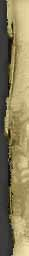

|  |

|
>> Содержание / Список кланов /
  Nightmare Nightmare
Никто не знает, когда Мы появились. Возможно, это было в те, покрытые мраком времена, когда первые люди только-только начали осваивать этот жестокий мир. Они боялись всего: и огня, и тьмы, и света…. Они не знали, что есть добро, а что зло. Смерть подстерегала их на каждом шагу. А успокоение эти люди могли найти только во сне, в коротком забытье. Но даже тогда они видели такие кошмары, от которых одни сходили с ума, а другие и вовсе уже не просыпались.… Да, на заре этого мира мы существовали только в сознании людей, напоминая о себе лишь в часы беспамятства. Но семена упали в благодатную почву. Первородный ужас и кошмар, в который превратилась жизнь несчастных людей, питали нашу силу, а страдания и боль повсюду стали нашими спутникам. Века сменялись тысячелетиями, разум и воля людей крепли. И даже просыпаясь по ночам в холодном поту, они отказывались в нас верить. Наивные, они приписывали эти кошмары своему разыгравшемуся воображению и разуму. И лишь твёрдая как сталь воля могла противиться нашему влиянию.
Но шли эпохи. Расцветали и уходили в Лету империи. А память о правителях, перед которыми трепетали целые народы, не сохранили даже легенды. И вот грянула Война. Величайшая Война, для которой и был создан этот мир. Противостояние Света и Тьмы, добра и зла, протекавшее до этого только в душах людей, выплеснулось наружу. Тысячи людей шли, чтобы убивать друг друга во имя того, чего они и сами до конца не понимали.
Не Мы первые начали эту войну, и не нам её и заканчивать. Кто мы? Всего лишь песчинки в этой разразившейся внезапно буре. Мы – воины Великой Тьмы. Мы не лучше и не худше наших врагов. Они так же грабят и убивают. У нас такие же души, как и у них. Черны наши стяги, а не сердца. И свет и Тьма – это две стороны одной медали. Вот здесь, в стане войска Великого Владыки и возник наш клан – Nightmare.Наша цель – сеять кошмар и смятение в ряды воинов Света, лишая их разума и ослабляя волю. Видения, которые предстают перед врагом каждую ночь благодаря нам, делают своё дело: враги лишены сна и отдыха, они уже с подозрением смотрят даже на своих друзей и при малейшем шорохе выхватывают мечи. Они боятся идти в дозор, так как знают, что кому-то из них вернуться уже не суждено.… Благодаря нам целые армии бросали оружие и падали ниц. Духи Ночных Кошмаров унесли в могилу десятки, сотни, тысячи адептов Света… И всё же Мы не решающая сила в этой войне. И если Тьма – оружие, то мы – его остриё, мы предпочитаем выжидать, чтобы нанести один точный удар…
И то, что миллионы людей страшатся выключать на ночь свет и просыпаются в холодном поту ещё раз доказывает, что сила наша велика до сих пор. И пусть это будет нашим скромным вкладом в победу и торжество Великой Тьмы.
Официальный сайт клана: http://www.nightmare.com.ua
|
|
|